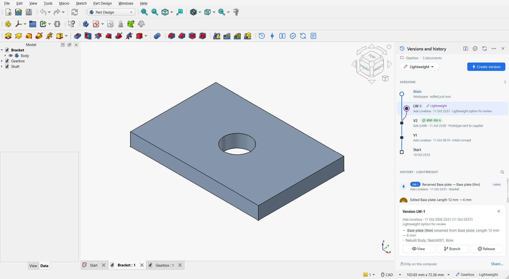
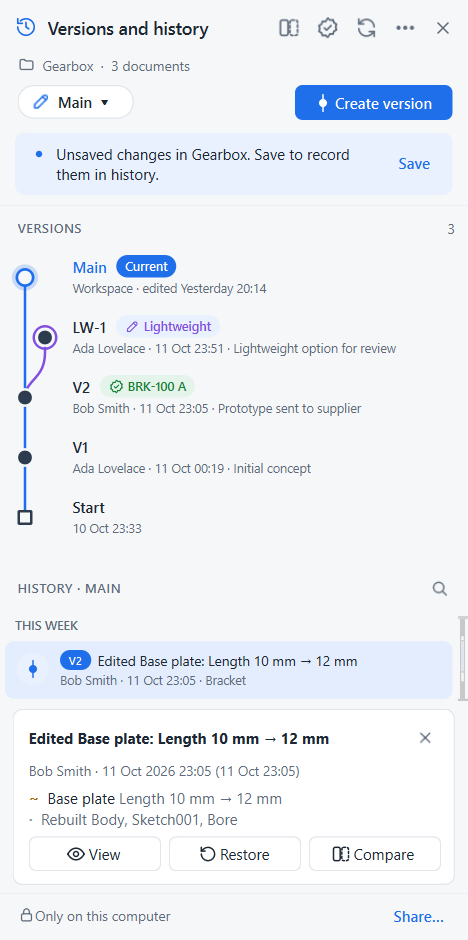
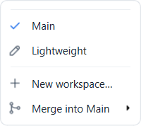
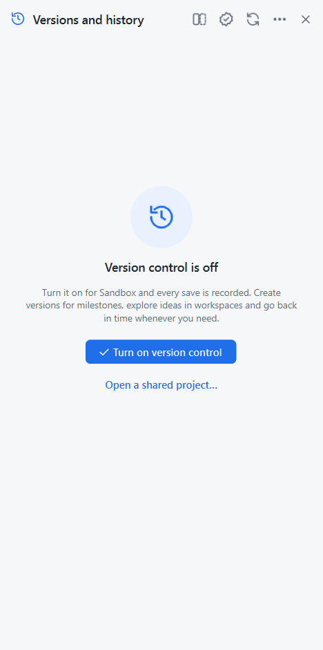

The interface
Everything Strata does is reachable from the Versions and history panel. It is available in every workbench. Show or hide it with Ctrl+Shift+H, , the history-clock button on the Strata toolbar, or the project · workspace indicator in the status bar.

The panel at a glance
- Title bar
-
Versions and history, with buttons for Compare, Releases, Sync, a ⋯ menu and × to close the panel.
- Project line
-
The project folder’s name and how many documents it contains.
- Workspace pill
-
The current workspace, for example Main ▾. Click it to switch workspace, create a new one, or merge another workspace into this one.
- Create version
-
The blue button. Creates a named snapshot of the whole project (Ctrl+Shift+V).
- Banner
-
Appears when something needs your attention: unsaved changes (with a Save link), or that you are viewing a read-only copy or a 3D comparison (with Close).
- Versions
-
The version graph. Each workspace has its own coloured lane.
-
a solid node is a version;
-
an open node is the latest state of a workspace; the current one has a halo and a Current chip;
-
the square at the bottom is the project’s Start;
-
coloured chips show releases, for example BRK-100 A: green for released, amber for pending, red for rejected, grey for obsolete.
-
- History
-
Every recorded change of the current workspace, newest first, grouped as Today, Yesterday, This week and then by month. Ordinary saves show the author’s initials; milestones (versions, restores, merges, new workspaces) show an icon. The newest entry is marked Latest. Click the magnifier or press Ctrl+F to filter by feature, person or document.
- Footer
-
Whether the project is shared. Only on this computer · Share… or Shared · synced 5 min ago · Sync now.
Working with history entries and versions
Hover a history entry to reveal two buttons: the eye opens that point as a read-only copy, the arrow restores it. Double-click an entry, or select it and press Enter, to view it.
Select an entry or a node in the graph to open the details card below the lists:

The card lists what changed: + added, − deleted, ~ edited (with old → new values), and a muted line for features that were only rebuilt as a consequence.
Its buttons depend on what you selected:
History entry |
View, Restore, Compare |
Version |
View, Branch, Release |
Another workspace |
Switch, Merge into … |
Your workspace |
Create version |
Press Esc to close the card.
Right-click menus
- History entry
-
View this point · Compare with latest · Show what changed here · Restore to this point… · Restore only document… · Create version here… · Branch from here…
- Version or workspace in the graph
-
Switch to workspace · Merge workspace into current · View · Compare with latest · Branch to create workspace… · Release… (versions) or Create version here… · Revision history of part number… (versions with a release) · Restore workspace to this point… · Delete workspace…
Workspace menu

The pill’s menu lists all workspaces with a tick on the current one. Workspaces a colleague created that you have not worked in yet are marked (from team); choosing one switches to it like any other. Below the list: New workspace… and Merge into current with a sub-menu of the other workspaces.
The ⋯ menu
Create version… · New workspace… · Compare… · Releases… · Properties… · Share project… (or Sync now) · Project settings… · Open a shared project… · Turn on version control… (when the active document’s folder is not a project yet).
When version control is off
If the active document is not in a project, the panel offers to turn version control on, or to open a project a colleague shared. If the document has never been saved, it asks you to save it into a project folder first.

Status bar and toolbar
The status bar shows project · workspace on the right, for example Gearbox · Lightweight. Click it to show or hide the panel.
The Strata toolbar holds Versions and history, Create version, Compare, Releases, Sync and Properties. The same commands are at the bottom of the Tools menu, with their keyboard shortcuts.
Dialogs
| Dialog | What it does |
|---|---|
Turn on version control |
Choose the project folder (shows how many documents it contains) and your name. |
Create version |
Version name (the next |
Create workspace |
Name and optional description. Starts from the latest state, or from the version or entry you branched from. |
Compare |
Pick From and To (latest, workspaces, versions, recent history). Shows a tree of documents and features. Show in 3D overlays both states of the selected document. |
Merge |
An overall strategy (Merge changes, Keep target, Replace with source) and one card per document with a summary of each side’s change and a choice: Keep, Take, Keep both (copy) or Combine both changes. Compare with base. See Merge workspaces. |
Restore |
The documents that differ from the chosen point, each with what restoring would undo. Untick the ones to keep. Compare changes. |
Properties |
One row per document: part number, description, company and custom columns. Add property…. See Part numbers and properties. |
Release |
One row per document of the version: tick, part number and description (from the document’s properties at that version), revision (next one suggested). Require approval turns Release into Submit for approval. |
Releases |
The register of all part numbers and revisions with state, document, version, requester, approver and comment, or the revision history of one part number (Show). Approve, Reject, Obsolete…, View, Export…. |
Obsolete |
A reason, and Mark revision as re-releasable. |
Share project |
The shared location: a folder (Browse…) or a Git server address. |
Open shared project |
The shared location and the folder to put your copy in. |
Project settings |
Your name and email, whether saves are recorded, whether binary attachments are shared, the revision scheme. |
Every dialog follows the usual keys: Enter for the blue button, Esc to cancel.